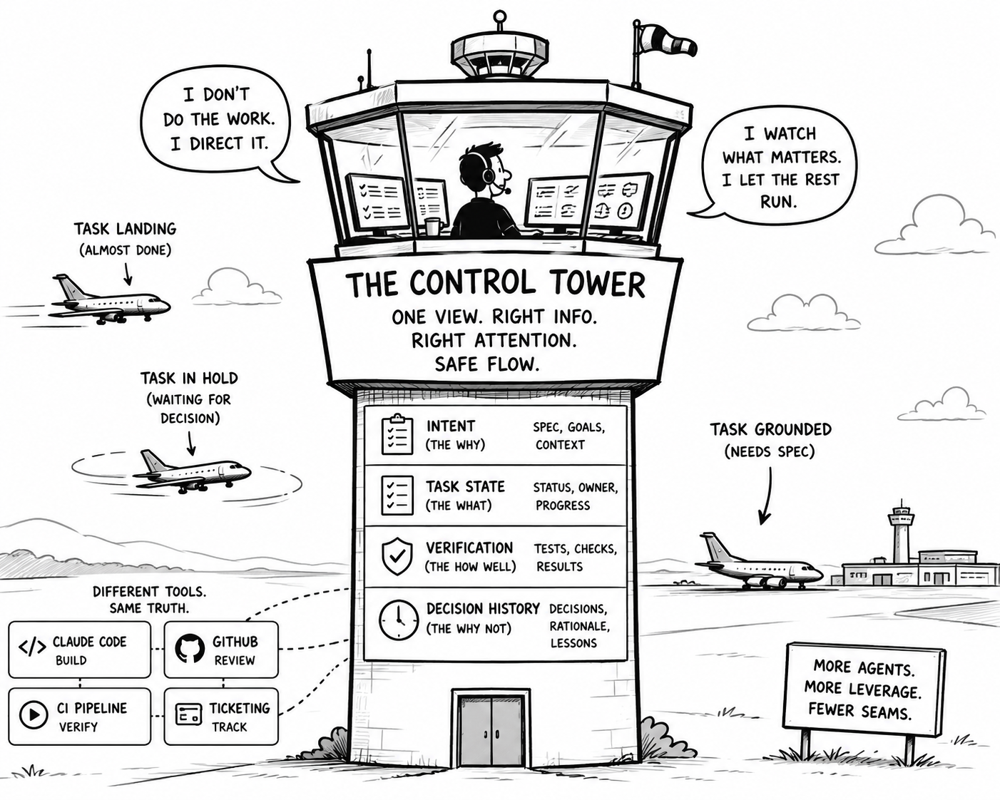

The Watched Pot
You type /goal implement the payment retry logic across the billing service and hit enter.
For the next four minutes, you watch. The terminal scrolls. Tool calls fire. Files change. You read every line as it streams by, the same way you’d watch a compiler bar crawl to 100%, except this isn’t compiling, it’s thinking, and somewhere around minute two you catch yourself doing something strange: hovering over the “stop” button, not because anything’s wrong, but because watching is uncomfortable when you’re not the one doing the work.
This is the tell. Most developers who’ve picked up long-running agents (/goal, /loop, background tasks) are still running them through a chat-window mental model. Fire a prompt, wait for a reply, read the reply, fire the next prompt. It’s the same loop we learned typing into ChatGPT eighteen months ago, just pointed at a codebase now. It breaks down the moment the task takes longer than a coffee sip to finish, because nothing in that mental model tells you what to do with your hands, or your attention, while the agent works.
The tools have changed shape. Our instincts haven’t caught up. We were handed an asynchronous, high-autonomy system, and we’re still operating it synchronously: one thread, one prompt, one stare at a time.
The “Air Traffic Controller” Mentality
An air traffic controller does not fly the plane. That is the job. Their skill is judgment about attention, deciding what deserves their eyes and letting the rest run without them. Developers running long agent tasks are still flying the plane, dispatching work and then sitting there watching, as if staying close to it were the same as doing it.
It is not. Attention used to equal care. Now watching a dispatched task produces nothing. It is dead time dressed up as diligence, a habit from a job that no longer exists.
An ordinary morning has one task minutes from landing, one circling on a decision only you can make, one grounded because you have not written its spec. None of these need each other, they need you, unevenly, and most developers cannot tell which one, right now. So they watch the wrong one, watch all of them, watch none of them well. The controller never had this problem. For developers, it still feels like the job. That feeling is the only thing standing between them and the leverage in front of them.

You Are the Handoff
The tools are not behind anymore. Your IDE runs agents that plan, edit across files, and finish work on their own. GitHub reviews, summarizes, suggests. CI writes the tests it runs. Every layer got competent, and it happened fast.
They just do not know about each other.
And they never will by accident, because they do not come from the same place. Your developers dispatch work through Claude Code. Your review happens through GitHub’s own cloud agent. Your pipeline runs something else again, and your ticketing system has its own model summarizing the thread. Four vendors, four roadmaps, four private notions of what the task is. Nobody built the handoff, because nobody owns both sides of it.
So the context dies in the gaps. The reviewing agent has no idea what the coding agent already tried and rejected. The pull request arrives without the intent that produced it. The test run cannot tell a model’s guess from a decision you made deliberately last week. Each tool holds a fragment of the truth and none of them share it.
You carry the rest. You are the thing moving context between systems, restating intent in three places, remembering what each tool cannot see. The integration layer is a person, and that person is you.
This is what actually caps airspace capacity. Not model quality, not how independent the agents are. Every additional task adds another set of seams for you to hold shut. Five capable agents with no shared substrate is not five times the leverage. It is five times the stitching.
What is missing is not intelligence. It is a place where intent, task state, verification results, and decision history live once, and every tool reads from the same copy. A spec written at dispatch that the reviewer can still see. A failed check that knows which decision it invalidated.
The enterprises that get real leverage from this will not be the ones with the smartest tools. They will be the ones whose tools stopped needing a human to remember on their behalf.
The Missing Control Tower

Most enterprise AI rollouts run in the wrong order. Buy seats, deploy agents, measure adoption, then discover a year in that nothing coordinates and everyone has built habits around the gaps.
The sequence should invert. Before the second wave of agents, decide where the work actually lives.
Not where the code lives. Where the intent lives, so a spec written once is readable by the tool that reviews the result. Where task state lives, so a dispatched task has one status the whole system can see rather than a different status per vendor. Where verification attaches, so a failed check knows which decision it invalidated. Where decisions persist, so the reason something was rejected in March is still visible when it returns in June.
None of that is a product you buy. Some of it is convention, some is glue, most of it is deciding which system is authoritative and making everything else defer to it. That is less satisfying than a procurement decision, which is exactly why it gets skipped.
And the cost of skipping it is not that things break. It is that leverage stops scaling. Every agent you add contributes another seam, and seams are held closed by people. Ten seats without shared state is not ten times the output. It is one person doing ten times the remembering, and that person has a ceiling you cannot buy your way past.